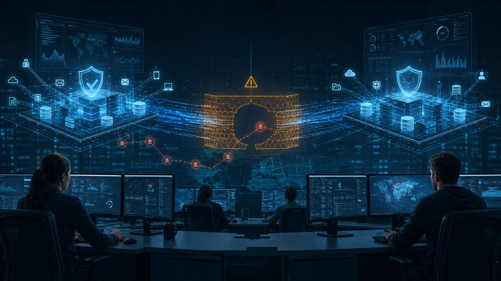

A SIEM Migration Is Not Just a Technology Refresh. It Is a Security Risk Event.
A SIEM migration changes how an organisation sees cyber threats. It must be governed as a period of elevated security risk.

Organisations regularly replace security platforms as contracts expire, technologies become outdated and better capabilities become available. SIEM migrations from on-premises platforms to cloud-native solutions can promise scalability, automation and integration.
But a SIEM migration is different from an ordinary system upgrade. The SIEM sits at the centre of security monitoring, correlating activity and alerting security operations teams when something may be wrong.
Changing the platform changes how the organisation sees cyber threats. During the transition, an organisation may become less secure not because firewalls or endpoint controls have stopped working, but because it can no longer see clearly whether those controls are detecting something important.
The Most Dangerous Gap May Be Invisible
Security incidents rarely involve a single obvious event. An attacker may begin with phishing, obtain a credential, access a remote service, escalate privileges and extract sensitive data. Each step may appear harmless independently.
The SIEM connects these activities. If log sources remain split between old and new platforms, the complete attack sequence may no longer be visible in one place. Logs being collected is not the same as threat detection.
The important question is whether the organisation can still correlate related activity, detect critical attack scenarios and escalate alerts to the right responders in time.
Go-Live Does Not Mean Operational Readiness
A new SIEM may technically go live before it is operationally ready. Log sources may be connected and dashboards available, while critical detection rules still need tuning, incident-response integration remains incomplete and the new monitoring provider is still mobilising.
A SIEM is ready when people, processes and technologies can detect, investigate, escalate and respond together. This includes alert ownership, after-hours escalation, incident classification, response timelines and fallback arrangements.
Detection Parity Is More Important Than Feature Parity
Feature comparisons do not prove existing detection coverage has been preserved. Organisations must know which active security use cases depend on which systems, and whether equivalent detections have been implemented and validated in the new platform.
Detection parity should cover privileged-account misuse, suspicious authentication, malware activity, unauthorised data access, security-control bypass and unusual outbound transfers. Rules must be tested with realistic events because platforms process, normalise and correlate data differently.
Historical Logs Are Part of the Investigation Capability
Historical logs are not merely a storage requirement. They are essential to reconstructing an intrusion, determining when it began, which accounts were affected and what information may have been accessed.
If the old SIEM becomes unavailable before historical logs are preserved, the organisation may lose investigation capability. It should know which logs remain accessible, for how long, in what format and whether they can be searched efficiently.
Compensating Controls Must Be Real
Where gaps exist, compensating controls must be deliberate, documented and time-bound: direct monitoring of critical tools, manual review of high-risk alerts, daily review of privileged activity and defined escalation arrangements.
Manual monitoring cannot be vague assurance. The organisation must identify who reviews which events, how often, what evidence is retained and the limitations of the team performing the work.
Treat the Transition as a Period of Elevated Risk
Management should see remaining monitoring gaps, critical use cases not yet operational, provider readiness, unresolved log-source issues and expected closure dates. Cutover should be based on security acceptance criteria, not only implementation schedules.
Before retiring the old platform, critical log sources should be connected, high-priority detections validated, alert ownership clear, historical data accessible and the new operating model able to respond effectively.
Final Thought
A SIEM migration is not just a technology refresh. It is a security risk event that must be actively governed until the organisation can see clearly again.
Question assumptions. Share knowledge. Build trust.
Share this article
If this perspective was useful, share it with your network.